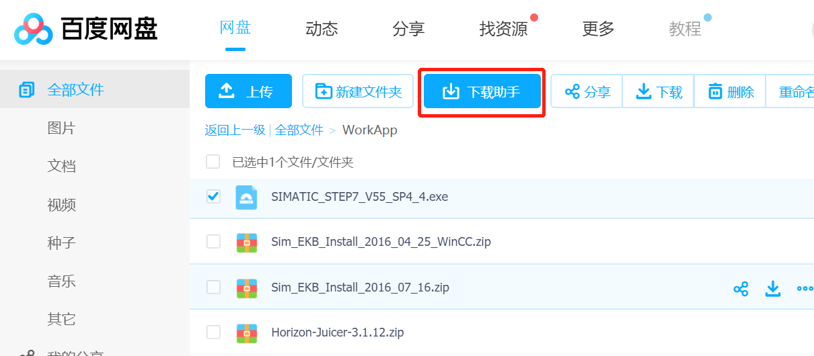
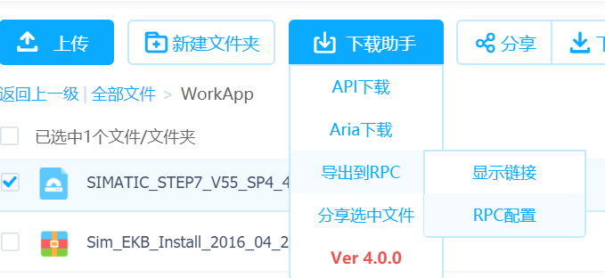

这篇文章上次修改于 595 天前，可能其部分内容已经发生变化，如有疑问可询问作者。

众所周知，现在百度盘非会员下载速度十分慢，还要求必须使用他的客户端下载，我的资料现在也基本不会存在百度云了。但是在下载已经保存在上面的资源或者网络别人分享的资源，还是偶尔要用到，而我又对百度十分的讨厌，也不会去充值会员，所以研究了下如何解决非会员的限速问题。
BaiduPCS-Go
BaiduPCS-Go 是我之前一直使用的工具，他是 GO 语言编写的命令行工具，需要登录你的账号使用，集成下载/上传等功能。就是一个第三方命令行客户端。
他可以设置缓存/并发数/user agent等，理论上可以加速下载。
GitHub 主页(作者已删除)：https://github.com/iikira/BaiduPCS-Go
fork：https://github.com/Erope/BaiduPCS-Go
可以下载 release 页面发布的版本，也可以使用源码自己编译，go 语言编译教程参考我的文章：https://blog.niekun.net/archives/468.html
打开 BaiduPCS-Go 客户端，进入命令行界面，登录完成后可以输入 help 指令查看支持的命令。
----
BaiduPCS-Go - 百度网盘客户端 for windows/amd64
USAGE:
BaiduPCS-Go.exe [global options] command [command options] [arguments...]
VERSION:
v3.6.1-devel
DESCRIPTION:
BaiduPCS-Go 使用Go语言编写的百度网盘命令行客户端, 为操作百度网盘, 提供实用功能.
具体功能, 参见 COMMANDS 列表
特色:
网盘内列出文件和目录, 支持通配符匹配路径;
下载网盘内文件, 支持网盘内目录 (文件夹) 下载, 支持多个文件或目录下载, 支持断点续传和高并发高速下载.
---------------------------------------------------
前往 https://github.com/iikira/BaiduPCS-Go 以获取更多帮助信息!
前往 https://github.com/iikira/BaiduPCS-Go/releases 以获取程序更新信息!
---------------------------------------------------
交流反馈:
提交Issue: https://github.com/iikira/BaiduPCS-Go/issues
邮箱: [email protected]
AUTHOR:
iikira/BaiduPCS-Go: https://github.com/iikira/BaiduPCS-Go
COMMANDS:
tool 工具箱
help, h, ?, ？ Shows a list of commands or help for one command
其他:
bg 管理后台任务
clear, cls 清空控制台
env 显示程序环境变量
run 执行系统命令
sumfile, sf 获取本地文件的秒传信息
update 检测程序更新
百度帐号:
login 登录百度账号
loglist 列出帐号列表
logout 退出百度帐号
su 切换百度帐号
who 获取当前帐号
百度网盘:
cd 切换工作目录
cp 拷贝文件/目录
createsuperfile, csf 手动分片上传—合并分片文件
download, d 下载文件/目录
export, ep 导出文件/目录
fixmd5 修复文件MD5
locate, lt 获取下载直链
ls, l, ll 列出目录
match 测试通配符
meta 获取文件/目录的元信息
mkdir 创建目录
mv 移动/重命名文件/目录
offlinedl, clouddl, od 离线下载
pwd 输出工作目录
quota 获取网盘配额
rapidupload, ru 手动秒传文件
recycle 回收站
rm 删除文件/目录
search, s 搜索文件
share 分享文件/目录
tree, t 列出目录的树形图
upload, u 上传文件/目录
配置:
config 显示和修改程序配置项
GLOBAL OPTIONS:
--verbose 启用调试 [%BAIDUPCS_GO_VERBOSE%]
--help, -h show help
--version, -v print the version
COPYRIGHT:
(c) 2016-2019 iikira.执行 login 指令，登录百度账户，根据提示输入密码及验证码。
登录完成后可以使用 ls cd 等命令来访问目录及文件。
执行 config 命令查看当前配置信息：
运行 BaiduPCS-Go config set 可进行设置配置
当前配置:
名称 值 描述 建议值
appid 421937 百度 PCS 应用ID
cache_size 256.00KB 下载缓存, 如果硬盘占用高或下载速度慢, 请尝试 调大此值 1KB ~ 256KB
max_parallel 64 下载最大并发量 50 ~ 500
max_upload_parallel 64 上传最大并发量 1 ~ 100
max_download_load 3 同时进行下载文件的最大数 1 ~ 5
max_download_rate 不限制 限制最大下载速度, 0代表不限制
max_upload_rate 不限制 限制最大上传速度, 0代表不限制
savedir C:\Users\Marco Nie\Downloads 下载文件的储存目录
enable_https true 启用 https true
user_agent Mozilla/5.0 (Macintosh; Intel Mac OS X 10_13_2) AppleWebKit/537.36 (KHTML, like Gecko) Chrome/63.0.3239.132 Safari/537.36 Mozilla/5.0 (Macintosh; Intel Mac OS X 10_13_2) AppleWebKit/537.36 (KHTML, like Gecko) Chrome/63.0.3239.132 Safari/537.36 浏览器标识
pcs_ua PCS 浏览器标识
pan_ua netdisk;2.2.51.6;netdisk;10.0.63;PC;android-android Pan 浏览器标识 netdisk;2.2.51.6;netdisk;10.0.63;PC;android-android
proxy 设置代理, 支持 http/socks5 代理
local_addrs 设置本地网卡地址, 多个地址用逗号隔开执行 config set --名称=value 可以修改设置值。
下载指令是 d file_name。
我当前使用 BaiduPCS-Go 速度非常慢，在下载时使用参数 --verbose 和 --status 查看详细信息，发现链接都是错误的，经过查询发现可能是 appid 的问题，我的账号可能上了黑名单了，需要修改 appid 来修复。
找了半天网上提供的 appid 都没法用，这个 python 小程序可以扫描可用的 appid：https://gist.github.com/pcmid/5818b1165bc3f5f2088e19299278a613
from __future__ import print_function
import requests
import threading
import sys
def eprint(*args, **kwargs):
print(*args, file=sys.stderr, **kwargs)
class GetterTread(threading.Thread):
def __init__(self, thread_id, app_id, times=1000):
threading.Thread.__init__(self)
self.__thread_id = thread_id
self.__URL = "http://pcs.baidu.com/rest/2.0/pcs/file?app_id={}&method=list&path=%2F"
with open("./BDUSS.txt") as f:
BDUSS = f.readline()
self.__COOKIES = {"BDUSS": BDUSS}
self.app_id = app_id
self.times = times
def run(self):
current_id = self.app_id
while current_id - self.app_id < self.times: # 250000:
url = self.__URL.format(current_id)
try:
r = requests.get(url, cookies=self.__COOKIES)
if r.status_code == 200:
print(current_id)
except Exception:
eprint("Exception: " + str(current_id))
current_id += 1
# print("id " + str(self.__thread_id) + " over")
if __name__ == '__main__':
start_app_id = 300000
times = 1000
threads_list = []
while start_app_id < 500000:
thread = GetterTread(start_app_id, start_app_id, times)
thread.start()
threads_list.append(thread)
start_app_id += times
# print("size: " + str(len(threads_list)))
for thread in threads_list:
thread.join()需要在目录下放一个 BDUSS.txt，里面填上你的账号的 BDUSS 获取 BDUSS 的方法参考
网盘直链下载助手
BaiduPCS-Go 慢慢失效后，我开始找寻其他的有效方法，发现有一个网盘直链下载助手挺好用的。
官网：https://www.baiduyun.wiki/
GitHub 主页：https://github.com/syhyz1990/baiduyun
这是一个油猴脚本，需要在 chrome 安装 Tampermonkey 脚本管理器，在 chrome 安装 tampermonkey
安装好管理器后，访问 GitHub脚本，会自动跳转到 tampermonkey 安装界面，然后点击安装即可。
进入百度云盘，会出现一个下载助手按钮：

勾选想要下载的资源，点击下载助手，里面有几个选项：
第一个是直接获取 api 下载链接，可以在浏览器或其他下载软件粘贴链接即可下载：
第二个是 aria2 下载链接，可以导入 aria2 进行下载，关于 aria2 的安装参考我的教程：https://blog.niekun.net/archives/1199.html
安装好 aria2 后还需要安装网盘万能助手 chrome 插件才能使用这个功能。插件地址：https://www.baiduyun.wiki/download.html
插件安装步骤：
- 下载好 zip 包后解压到文件夹
- chrome 访问：chrome://extensions/ 右边打开 develop mode，点击 load unpacked 打开解压的文件夹就自动安装了
- 关闭 develop mode
- 重启浏览器
第三个是远程 aria2 rpc 下载，也是需要安装 aria2 并启用 rpc，然后点击 rpc 配置，设置参数：

点击显示链接可以直接发送到 aria2：
下载客户端推荐：
aria2：https://blog.niekun.net/archives/1199.html
IDM：https://www.internetdownloadmanager.com/ 可以设置最大链接数到 32 来提高下载速度 download - option - connection
xdown：https://xdown.org/ 可以识别 aria2 的链接
只有一条评论 (QwQ)
安卓怎么编译？